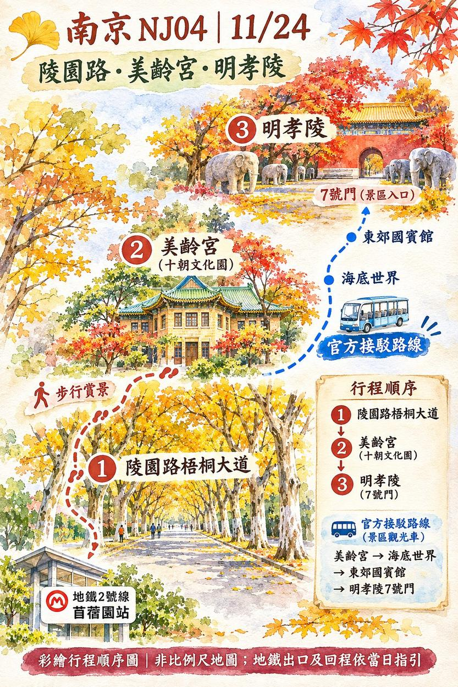

📍 站位：安全人行道
取景：樹蔭隧道
11/24（二） 梧桐大道・美齡宮・明孝陵
🍁 11-24｜陵園路・美齡宮・明孝陵｜路線彩繪圖

📍 當日路線・大字清晰版
以下依本日原行程時間安排重排，並非依模糊圖片辨字。可隨手機放大，水彩圖保留作景觀參考。
- 1陵園路梧桐大道預估抵達 09:20
- 2美齡宮預估抵達 10:30
- 🍜景區午餐預估抵達 12:00
- 4明孝陵石象路預估抵達 13:40
- 5燕雀湖（可選）預估抵達 15:35
時間為估計，非預約時間；實際接駁及步行依現場路況。路線圖片的地理比例與連線尚未通過驗收。
11/24（二） 梧桐大道・美齡宮・明孝陵展開 ▾
⏱️ 慢走1.5倍｜到達機位與拍照時間
到達時間是估計，含慢走及必要轉乘緩衝；不是精確定位或預約時段。
08:30出發／前站 → 約09:20抵達｜陵園路梧桐大道
🚶 飯店出發約50–70分含地鐵、出站慢走
📸 拍照35–45分
⚠️ 車流多，不站車道
10:10出發／前站 → 約10:30抵達｜美齡宮
🚶 步行或接駁20–30分
📸 建築與樹景拍照45–60分
⚠️ 空拍角度改地面拍
11:45出發／前站 → 約12:00抵達｜景區午餐
🚶 走到順路餐飲點15–25分
📸 用餐60–75分
⚠️ 別為餐廳折返
13:15出發／前站 → 約13:40抵達｜明孝陵石象路
🚶 接駁／步行25–40分
📸 石獸彩葉拍照60–75分
⚠️ 神道較長，保留休息
15:10出發／前站 → 約15:35抵達｜燕雀湖（可選）
🚶 移動25–40分，需依實際出口調整
📸 拍照25–35分
⚠️ 疲累就直接回飯店
🚇 怎麼去
1號線新街口轉2號線苜蓿園；園內搭接駁
📷 看什麼・怎麼拍
陵園路拍梧桐透視；美齡宮看建築；明孝陵神道石像
☔ 雨天／替代
雨天改室內展館；明孝陵換晴日
🍜 南京大牌檔 中山陵店
📸 今日沿路最佳機位（依景點順序）
No.1｜陵園路｜陵園路梧桐大道
從安全人行道拍金黃梧桐的道路透視，晨間柔光較好。
No.2｜空拍替代｜美齡宮地面替代角度
原圖 No.2 為高空環形林道，地面無法複製；改拍建築屋頂與周邊樹冠。
加選 A1｜明孝陵石象路
石獸與紅黃秋葉同框，沿神道步道拍道路縱深。
加選 A2｜燕雀湖落羽杉
湖岸拍落羽杉與倒影；若體力或時間不足可略過。
📷 今日景點照片・最佳拍照點
📍 站位：建築旁開放區
取景：屋頂＋樹冠
📍 站位：石象路神道
取景：石獸＋彩葉
📍 站位：湖畔開放區
取景：落羽杉倒影
⚠️ 本圖為「入口→步道→建議站位→主景」的概念相對位置圖，不是依真實園區方位測繪，也不代表入口與機位間的實際路徑、距離或東西南北。高德目前連至景點區域，未核實精確拍攝座標；現場以開放道路與標示為準。
🍜 11/24 走到哪裡吃｜跟行程走
09:20–11:30 陵園路梧桐大道 → 美齡宮｜先拍照，不必為餐廳折返。
12:00–13:15 石象路／美齡宮周邊午餐 → 飯後依體力走明孝陵5號門石象路，或到十朝文化園站搭車去7號門。
1｜雲几・紫金山（梧桐大道店）
茶飲、正餐｜石象路7–9號
12:00｜美齡宮周邊先吃午餐，接續明孝陵5號門／石象路
2｜六朝瑞庭・匠心淮揚菜（中山陵店）
淮揚菜、坐著吃午餐｜石象路7號（雲几西側約50米）
12:00｜美齡宮後午餐的第二選擇，實際入店方向以地圖定位為準
🍽 備選｜南京大牌檔（中山陵店）（中山門大街9號 紫金文化廣場F1）
這家店在較靠近苜蓿園站的中山門大街，適合調整行程時用餐或回程有經過再吃；不是美齡宮後主線午餐。
店家地址出自鐘山景區官方餐飲資料（2025 年）及攜程店家資料；是否營業、排隊與優惠請以當日門店為準。尚未核實從美齡宮到各店的逐段無障礙人行路線，不標示步行分鐘數。